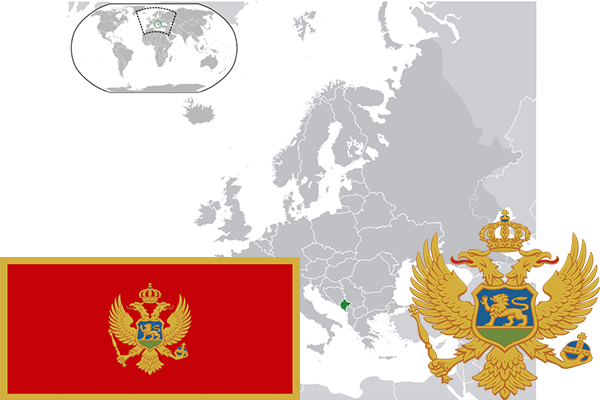

To`liq nomi: Chernogoriya Respublikasi
Region: Janubiy Yevropa
Qonunchilik shakli: Parlamentar Respublika
Mustaqillik kuni: 3-iyun 2006-yil
Poytaxt: Podgoritsa
Maydoni: 13 812 км²
Chegaradosh davlatlari: Bosniya va Gersegovina, Kosovo, Serbiya
Aholisi: 622 218 (2016-yil)
Aholi zichligi: 45 /км²
Aholining o`rtacha yoshi: 76,1 yil
Rasmiy tili: chernogor tili
Dini: 74% xristian, 17% islom va boshqa dinlar
Pul birligi: Yevro
Telefon prefiksi: +976
Internet domen: .me
Xalqaro tashkilotlarga a`zoligi: NATO (2017-yil)
Dengiz va okeanlarga chiqishi: Adriatik dengizi
YIM: Butun: $ 6,95 mlrd. (2015-yil), $ 15 800
Yirik shaharlari: Kotor,Durmitor, Budva, Podgoritsa